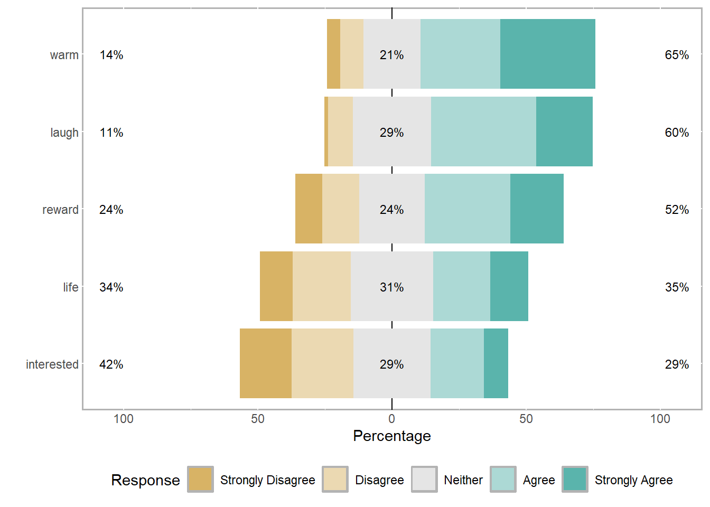
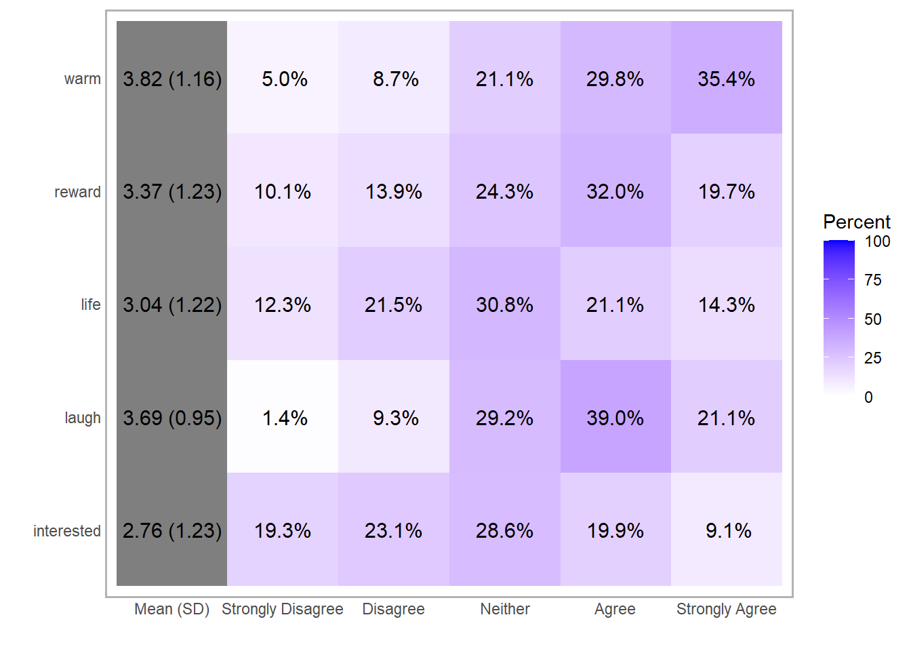
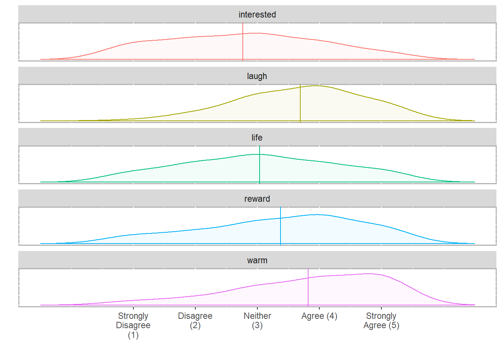
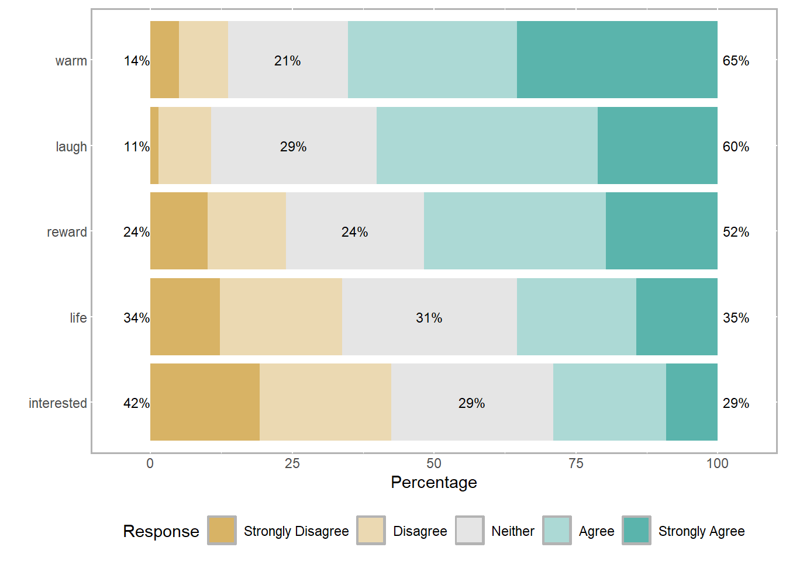
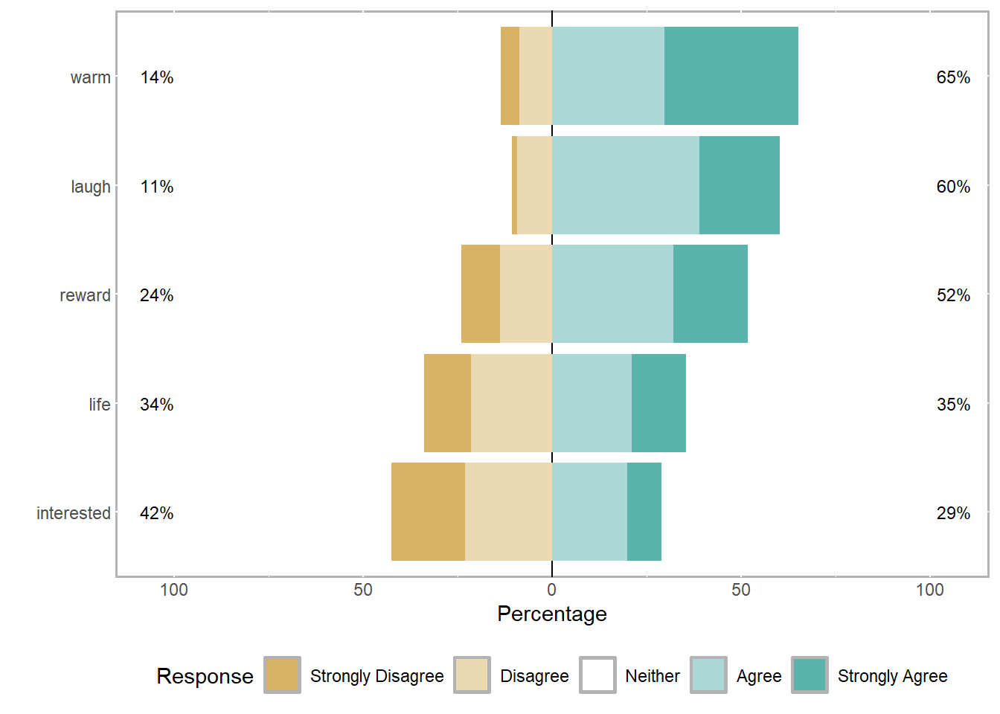
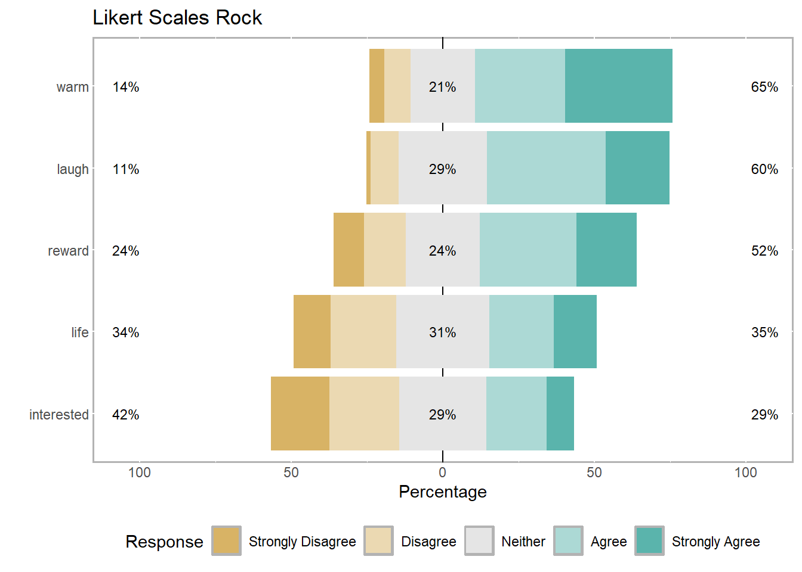
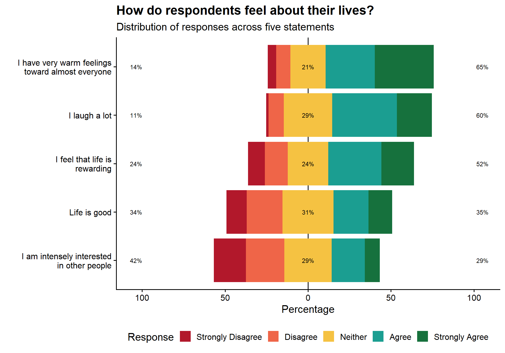
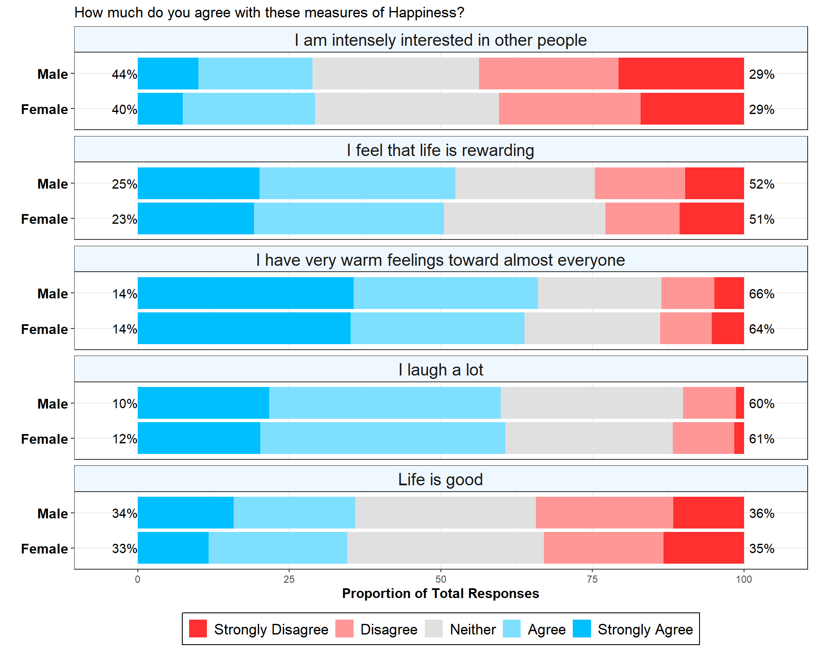
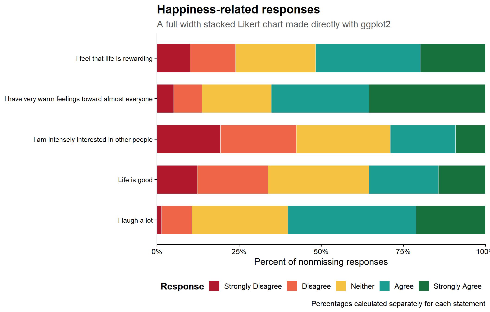

Survey responses tell a richer story when their order and distribution are visible. Organize Likert categories, create and compare plots, and choose colors and labels that help readers interpret the results.
NoteLearning objectives
By the end of this lesson, you should be able to:
Explain why Likert response categories must be ordered carefully.
Prepare a consistent set of ordinal factor variables.
Build and interpret plots with the likert package.
Customize labels, palettes, and grouped comparisons.
Create a comparable stacked chart directly in ggplot2.
Export readable graphics for presentations and reports.
11.1 Introduction
Likert items ask respondents to choose from ordered categories, such as Strongly Disagree through Strongly Agree. A multi-item Likert scale may combine several related items into a score. Here we focus on visualizing individual items, not on deciding whether to average them. Ordinal categories have an order, but the gaps between adjacent choices are not necessarily equal.
Our strategy: Begin the likert package, improve the visual design, then compare it with a chart built directly in ggplot2. Both are useful, but they answer slightly different visual questions.
11.2 Set up R and import data
We will use a simulated teaching dataset containing five happiness-related Likert items and a grouping variable, sex.
# Install packages once if needed (remove # to run)# install.packages(c("tidyverse", "gtsummary", "likert", "scales"))library(tidyverse)library(gtsummary)library(likert)library(scales)dt <-read.csv("data/simulated_likert_data.csv", stringsAsFactors =TRUE)head(dt)
id sex reward warm interested life
1 1 Female Disagree Strongly Disagree Disagree Strongly Disagree
2 2 Female Agree Strongly Agree Neither Neither
3 3 Male Agree Neither Disagree Neither
4 4 Male Neither Neither Disagree Strongly Disagree
5 5 Male Agree Agree Strongly Disagree Neither
6 6 Male Agree Agree Disagree Neither
laugh
1 Disagree
2 Agree
3 Neither
4 Agree
5 Neither
6 Agree
# TRUE means at least one missing response in that columnsapply(dt, anyNA)
id sex reward warm interested life laugh
FALSE FALSE FALSE FALSE FALSE FALSE FALSE
WarningMissing data and denominators
Do not automatically delete every respondent with one missing item. First inspect missingness and document how each item is summarized. Different numbers of valid responses can produce different denominators.
11.4 Put the response categories in order
R typically imports factor levels alphabetically when reading in a csv or Excel file. Likert responses have a meaningful order. Here we will speed up the factor reordering using the across() function. It applies the same change to all five items at once. Make sure to confirm that the labels in your own dataset match the spelling and capitalization that is in the data for this to work.
across() applies the same transformation to several columns. Here, factor(..., ordered = TRUE) establishes the intended response order.
11.5 Improve the descriptive table
The label argument makes the output readable without changing the original column names. The table is a useful companion to the graphs.
dt %>%select(-id) %>%tbl_summary(label =list( sex ~"Biological Sex", reward ~"I feel that life is rewarding", warm ~"I have very warm feelings toward almost everyone", interested ~"I am intensely interested in other people", life ~"Life is good", laugh ~"I laugh a lot")) %>%bold_labels()
Characteristic
N = 4971
Biological Sex
Female
188 (38%)
Male
309 (62%)
I feel that life is rewarding
Strongly Disagree
50 (10%)
Disagree
69 (14%)
Neither
121 (24%)
Agree
159 (32%)
Strongly Agree
98 (20%)
I have very warm feelings toward almost everyone
Strongly Disagree
25 (5.0%)
Disagree
43 (8.7%)
Neither
105 (21%)
Agree
148 (30%)
Strongly Agree
176 (35%)
I am intensely interested in other people
Strongly Disagree
96 (19%)
Disagree
115 (23%)
Neither
142 (29%)
Agree
99 (20%)
Strongly Agree
45 (9.1%)
Life is good
Strongly Disagree
61 (12%)
Disagree
107 (22%)
Neither
153 (31%)
Agree
105 (21%)
Strongly Agree
71 (14%)
I laugh a lot
Strongly Disagree
7 (1.4%)
Disagree
46 (9.3%)
Neither
145 (29%)
Agree
194 (39%)
Strongly Agree
105 (21%)
1 n (%)
11.5.1 tbl_likert()
Perhaps even better is to use the built-in Likert table function tbl_likert() in the gtsummary package. Note this table can only handle variables with the same likert levels.
dt %>%#need to remove non-likert variablesselect(-c(id, sex)) %>%tbl_likert(label =list( reward ~"I feel that life is rewarding", warm ~"I have very warm feelings toward almost everyone", interested ~"I am intensely interested in other people", life ~"Life is good", laugh ~"I laugh a lot")) %>%bold_labels()
Characteristic
Strongly Disagree
Disagree
Neither
Agree
Strongly Agree
I feel that life is rewarding
50 (10%)
69 (14%)
121 (24%)
159 (32%)
98 (20%)
I have very warm feelings toward almost everyone
25 (5.0%)
43 (8.7%)
105 (21%)
148 (30%)
176 (35%)
I am intensely interested in other people
96 (19%)
115 (23%)
142 (29%)
99 (20%)
45 (9.1%)
Life is good
61 (12%)
107 (22%)
153 (31%)
105 (21%)
71 (14%)
I laugh a lot
7 (1.4%)
46 (9.3%)
145 (29%)
194 (39%)
105 (21%)
11.6 Create a Likert object
The likert package expects item columns with matching response categories. Keep demographics such as sex separate and pass them as a grouping variable when needed later on (we will do this below).
Bar charts emphasize the balance of agreement and disagreement.
Heat plots show response concentrations.
Density displays are another exploratory view.
For most presentations, the bar chart is the clearest starting point.
plot(l1, type ="bar")

plot(l1, type ="heat")

plot(l1, type ="density")

11.8 Experiment with the bar plot
Try the legend at the bottom, a full-width stacked display, and a version that hides the neutral category. Caution: omitting neutral responses changes the visual story; it does not mean those responses were absent.
plot(l1, type ="bar", legend.position ="bottom")
plot(l1, type ="bar", legend.position ="bottom", centered =FALSE)

plot(l1, type ="bar", legend.position ="bottom", include.center =FALSE)

plot(l1) +labs(title ="Likert Scales Rock")

11.9 Replace short variable names with readable statements
For plots, rename() changes column names themselves; the labels supplied to tbl_summary() above do not automatically carry over.
like2 <- like1 %>%rename("I am intensely interested in other people"= interested,"I feel that life is rewarding"= reward,"I have very warm feelings toward almost everyone"= warm,"Life is good"= life,"I laugh a lot"= laugh)glimpse(like2)
Rows: 497
Columns: 5
$ `I feel that life is rewarding` <ord> Disagree, Agree, Ag…
$ `I have very warm feelings toward almost everyone` <ord> Strongly Disagree, …
$ `Life is good` <ord> Strongly Disagree, …
$ `I am intensely interested in other people` <ord> Disagree, Neither, …
$ `I laugh a lot` <ord> Disagree, Agree, Ne…
l2 <-likert(like2)
11.10 Color Palettes: from rainbows to purposeful palettes
The first chart is deliberately loud. The second uses a restrained diverging palette.
Color should communicate order and meaning, rather than merely decorate a plot. This is also an artform, so make it beautiful.
likert_colors <-c("#B2182B", "#EF6548", "#F5C242", "#1B9E91", "#16713D")p_likert <-plot(l2, centered =TRUE, legend.position ="bottom",colors = likert_colors, wrap =28) +labs(title ="How do respondents feel about their lives?",subtitle ="Distribution of responses across five statements") +theme_classic(base_size =15) +theme(plot.title =element_text(face ="bold"),legend.position ="bottom")#print the plotp_likert

TipDesign discussion
Which plot makes the response order easiest to interpret?
A red-to-green scheme is familiar, but color-vision accessibility should be checked and categories should always be labeled.
11.11 Grouped Likert plots (Comparing Groups)
We can also have the likert package make grouped likert graphs. This is really helpful if we want to see differences across groups. Here, for simplicity, we will make grouped likert graphs by the sex variable.
First, you have to tell the likert package how to handle the data. You need to tell RStudio which variables you want in the bars (items) and which it will use to group (grouping) the plots. Here, we use items = like2 and grouping = dt$sex. Both must retain the same row order. Notice that you are calling a complete data.frame(like2) that is a subset of dt and only contains the likert variables. Then you are referring back to the original data dt to get the grouping variable sex.
l3 <-likert(items = like2, grouping = dt$sex)l3
Group Item Strongly Disagree
1 Female I feel that life is rewarding 10.638298
2 Female I have very warm feelings toward almost everyone 5.319149
3 Female Life is good 13.297872
4 Female I am intensely interested in other people 17.021277
5 Female I laugh a lot 1.595745
6 Male I feel that life is rewarding 9.708738
7 Male I have very warm feelings toward almost everyone 4.854369
8 Male Life is good 11.650485
9 Male I am intensely interested in other people 20.711974
10 Male I laugh a lot 1.294498
Disagree Neither Agree Strongly Agree
1 12.234043 26.59574 31.38298 19.148936
2 8.510638 22.34043 28.72340 35.106383
3 19.680851 32.44681 22.87234 11.702128
4 23.404255 30.31915 21.80851 7.446809
5 10.106383 27.65957 40.42553 20.212766
6 14.886731 22.97735 32.36246 20.064725
7 8.737864 20.38835 30.42071 35.598706
8 22.653722 29.77346 20.06472 15.857605
9 22.977346 27.50809 18.77023 10.032362
10 8.737864 30.09709 38.18770 21.682848
# Inspect the summary if bar order or labels seem surprisingl3$results
Group Item Strongly Disagree
1 Female I feel that life is rewarding 10.638298
2 Female I have very warm feelings toward almost everyone 5.319149
3 Female Life is good 13.297872
4 Female I am intensely interested in other people 17.021277
5 Female I laugh a lot 1.595745
6 Male I feel that life is rewarding 9.708738
7 Male I have very warm feelings toward almost everyone 4.854369
8 Male Life is good 11.650485
9 Male I am intensely interested in other people 20.711974
10 Male I laugh a lot 1.294498
Disagree Neither Agree Strongly Agree
1 12.234043 26.59574 31.38298 19.148936
2 8.510638 22.34043 28.72340 35.106383
3 19.680851 32.44681 22.87234 11.702128
4 23.404255 30.31915 21.80851 7.446809
5 10.106383 27.65957 40.42553 20.212766
6 14.886731 22.97735 32.36246 20.064725
7 8.737864 20.38835 30.42071 35.598706
8 22.653722 29.77346 20.06472 15.857605
9 22.977346 27.50809 18.77023 10.032362
10 8.737864 30.09709 38.18770 21.682848
There is a hack to fix the distorted labels if you insist of full-width bars (centered=FALSE). You will fix this by adjusting the underlying graph in ggplot. Just get your likert graph the way you like it, and then save it as object. Next, adjust the way that the response categories are printed without changing the data. This is done with this code: OBEJCT_NAME$layers[[1]]$position <-position_stack(reverse=T) .
#fix those labelsp_grouped_full$layers[[1]]$position <-position_stack(reverse=T)
11.13 One Final Ridiculous likert plot
And finally here is a ridiculous plot that adjusts every setting I can think of just so you can see how to adjust your own likert plots:
#--- One plot with all of the options specified---# plot(l3, type='bar',centered = F, #centered or not include.center =FALSE, # Turn on/off neutral categorytext.size=4, # size of label fontlow.color="firebrick1", # bar colors high.color="deepskyblue", # bar colorsneutral.color="grey88", # change neutral colorplot.percent.low = T, # can turn labels on/off (T/F)plot.percent.neutral = F, # can turn labels on/off (T/F)plot.percent.high = T, # can turn labels on/off (T/F)reverse = F) +labs(title ="How much do you agree with these measures of Happiness?", y ="Proportion of Total Responses")+theme_bw()+theme(legend.position="bottom", #top, bottom, right, left are all options axis.text.y =element_text(face="bold", size =12, color="black"), axis.title.x =element_text(face="bold", size =12),strip.text =element_text(size=15),strip.background =element_rect("aliceblue"),legend.text =element_text(size=13), legend.title =element_blank(), # get rid of legend title legend.background =element_blank(), # clear backgroundlegend.box.background =element_rect(color ="black")) # add line around legend

11.14 Modern alternative: build a chart directly with ggplot2
A custom ggplot2 approach gives us complete control over category order, legend, and formatting. Below, each row is an item and each segment is a response percentage. This full-width stacked chart is intentionally different from the centered diverging plot above. It uses the same data and color mapping, making the comparison instructive.
# Transform the same five items to long formatlikert_long <- dt %>%select(all_of(likert_vars)) %>%pivot_longer(cols =everything(), names_to ="item", values_to ="response") %>%filter(!is.na(response)) %>%count(item, response, .drop =FALSE) %>%group_by(item) %>%mutate( pct =100* n /sum(n)) %>%ungroup() %>%filter(!is.na(pct))item_labels <-c(reward ="I feel that life is rewarding",warm ="I have very warm feelings toward almost everyone",interested ="I am intensely interested in other people",life ="Life is good",laugh ="I laugh a lot")likert_long <- likert_long %>%mutate(item =factor(item, levels =rev(likert_vars),labels =unname(item_labels[rev(likert_vars)])))#make the plotp_ggplot <- likert_long %>%ggplot(aes(x = pct, y = item, fill = response)) +geom_col(width =0.7, color ="white", linewidth =0.25,position =position_stack(reverse =TRUE)) +scale_fill_manual(values =setNames(likert_colors, likert_levels),drop =FALSE) +scale_x_continuous(labels =label_percent(scale =1),limits =c(0, 100), expand =expansion(mult =c(0, 0))) +labs(title ="Happiness-related responses",subtitle ="A full-width stacked Likert chart made directly with ggplot2",x ="Percent of nonmissing responses", y =NULL,fill ="Response",caption ="Percentages calculated separately for each statement") +theme_classic(base_size =15) +theme(plot.title =element_text(face ="bold", size =19),plot.subtitle =element_text(color ="gray35"),legend.position ="bottom",legend.title =element_text(face ="bold"),axis.text.y =element_text(size =11))#print the plotp_ggplot

WarningA full-width plot is not a centered diverging plot
A full-width stack uses a 0–100% axis. A centered diverging plot places disagreement and agreement on opposite sides of a midpoint. Do not compare the horizontal locations as if they were identical measures.
11.15 Key takeaways
Order your factors. Check missingness. Preserve neutral responses when possible. Use meaningful colors and clear labels. The likert package offers convenient diverging charts; direct ggplot2 offers flexibility and explicit control over data transformations.
ImportantOptional Student Practice
Change the palette and explain why your choices are appropriate.
Compare the centered and full-width charts. What becomes easier or harder to see?
Use the grouped plot to identify a possible difference, then check group sample sizes before interpreting it. Are there differences by group?